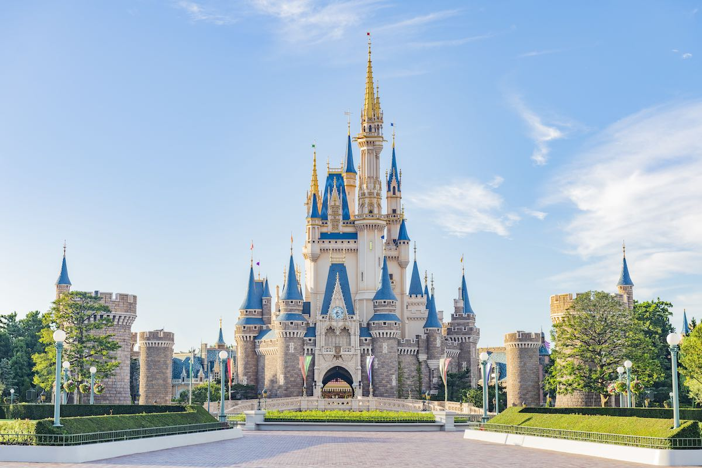

Disneyland Park
Disneyland park was the first of Walt Disney's signature theme parks, opening in Anaheim, California in 1955 and featuring the now-iconic Sleeping Beauty Castle.
Disneyland park was the first of Walt Disney's signature theme parks, opening in Anaheim, California in 1955 and featuring the now-iconic Sleeping Beauty Castle.
Since 1971, Walt Disney World Resort has focused on delivering legendary guest service and one-of-a-kind experiences that make it the number one vacation destination in the world where families create magical memories.
Tokyo Disneyland distinguishes itself as an innovative and unforgettable vacation destination even as it echoes the popular attractions of other Disney parks, like Disneyland and Magic Kingdom.
With a combination of Disney magic and European elegance, the Parisian version of Disneyland Park is a visually stunning theme park packed with magical attractions.

Located on the shores of the South China Sea, Hong Kong Disneyland delivers the wonder of Disney in an experience that's familiar to Disney enthusiasts yet unique to the park.
Shanghai Disneyland is an eye-catching park with the famous Enchanted Storybook Castle as its centerpiece. It's the largest of Disney's signature castles, and its singular design blends Disney style with Chinese architecture.